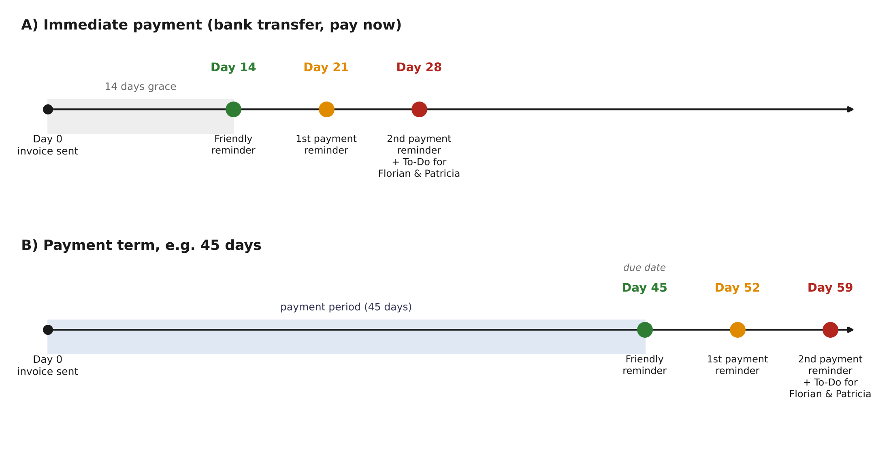
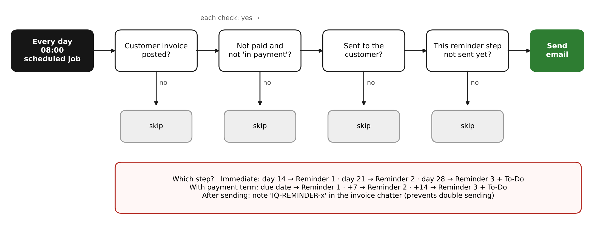

1. Why
Florian asked for automatic reminders for unpaid customer invoices: three emails, 7 days apart, and a notification to Florian and Patricia if the invoice is still unpaid. Before this, no reminders were sent automatically.
2. Schedule

| Invoice | Reminder 1 (friendly) | Reminder 2 (1. Mahnung) | Reminder 3 (2. Mahnung) + To-Do |
|---|---|---|---|
| Immediate payment | invoice date +14 | +21 | +28 |
| With payment term (15, 45 … days) | due date | due date +7 | due date +14 |
3. How the daily check works

| Rule | Detail |
|---|---|
| Only customer invoices | move_type = out_invoice, status Posted. Credit notes are ignored. |
| Only unpaid | payment_state not_paid or partial. Paid and "In Payment" are skipped. |
| Only sent invoices | is_move_sent = True. Invoices never sent (e.g. payment-link orders like #IQD-99691) get nothing. |
| Start date | Only invoices with invoice date ≥ START (go-live). Older open invoices are handled manually. |
| Each step once | After sending, chatter note IQ-REMINDER-1/2/3. The job checks for it before sending. |
| Language | Template language = customer language (German / English). |
4. What was created (production, 13.11.2026)
4.1 Email templates
Settings → Technical → Email → Templates · Applies to: Journal Entry · Send From {{ object.company_id.email_formatted }} · Language {{ object.partner_id.lang }} · Dynamic Reports: Invoice PDF · Auto Delete off. Staging IDs 78 / 79 / 80.
| Name (must not be renamed) | Subject DE | Subject EN |
|---|---|---|
| IQ Reminder 1 – friendly | Zahlungserinnerung – Rechnung {{ object.name }} | Payment reminder – Invoice {{ object.name }} |
| IQ Reminder 2 – 1st payment reminder | 1. Mahnung – Rechnung {{ object.name }} | 1st payment reminder – Invoice {{ object.name }} |
| IQ Reminder 3 – 2nd payment reminder | 2. Mahnung – Rechnung {{ object.name }} | 2nd payment reminder – Invoice {{ object.name }} |
Each email contains: invoice number, date, open amount (amount_residual), a button “Rechnung ansehen und online bezahlen” (customer portal link object.get_base_url() + object.get_portal_url(), no login, online payment registers automatically), IBAN DE90 7215 0000 0053 3477 46 and reference. Reminder 3 is neutral (no fees).
4.2 Scheduled action
| Field | Value |
|---|---|
| Where | Settings → Technical → Automation → Scheduled Actions |
| Name | IQ – Daily payment reminders |
| Model | Journal Entry |
| Interval | every 1 day (recommended time: 14:00, after bank reconciliation) |
| Action | Execute Code |
START = datetime.date(2026, 11, 13) # go-live date: only invoices from this day on
TEST_PARTNER = False # staging test: "Test Kallinger"
today = datetime.date.today()
T = env['mail.template']
tpl = {
1: T.search([('name', '=', 'IQ Reminder 1 – friendly')], limit=1),
2: T.search([('name', '=', 'IQ Reminder 2 – 1st payment reminder')], limit=1),
3: T.search([('name', '=', 'IQ Reminder 3 – 2nd payment reminder')], limit=1),
}
managers = env['res.users'].search(['|', ('name', 'ilike', 'Florian Knabl'), ('name', 'ilike', 'Patricia Knabl')])
domain = [
('move_type', '=', 'out_invoice'),
('state', '=', 'posted'),
('payment_state', 'in', ['not_paid', 'partial']), # skips paid + "in payment"
('is_move_sent', '=', True), # skips invoices never sent
]
if TEST_PARTNER:
domain.append(('partner_id.name', 'ilike', TEST_PARTNER))
else:
domain.append(('invoice_date', '>=', START))
for inv in env['account.move'].search(domain):
# Immediate (due date = invoice date) -> start 14 days later; otherwise start on due date
base = inv.invoice_date_due
if inv.invoice_date_due <= inv.invoice_date:
base = inv.invoice_date + datetime.timedelta(days=14)
days = (today - base).days
if days < 0:
continue
step = 3 if days >= 14 else (2 if days >= 7 else 1)
marker = "IQ-REMINDER-%s" % step
already = env['mail.message'].search_count([
('model', '=', 'account.move'), ('res_id', '=', inv.id), ('body', 'ilike', marker)])
if already or not tpl[step]:
continue
tpl[step].send_mail(inv.id)
inv.message_post(body="%s: payment reminder %s sent" % (marker, step))
if step == 3:
for u in managers:
inv.activity_schedule('mail.mail_activity_data_todo', user_id=u.id,
summary="Invoice unpaid after 3 reminders")Production: TEST_PARTNER = False, START = go-live date. Staging: TEST_PARTNER = "Test Kallinger".
5. Tests (staging, 13.11.2026)
Staging has no outgoing mail server ("Database neutralized"), so no email left the system. Test customer: Test Kallinger (own email).
| Invoice | Date | Sent | Result |
|---|---|---|---|
| RE/2026/05541 | 13.11. | yes | No reminder (not due) ✅ |
| RE/2026/05542 | 24.10. | yes | Reminder 1 + PDF ✅ |
| RE/2026/05543 | 21.10. | yes | Reminder 2 “1. Mahnung” ✅ |
| RE/2026/05544 | 14.10. | yes | Reminder 3 “2. Mahnung” + To-Do Florian & Patricia ✅ |
| RE/2026/05545 | 13.11. | no | No reminder ✅ |
| 05542–05544 before sending | no | Run at 10:12: nothing sent ✅ |
Template previews with the online-payment button checked in German and English.
6. Known limits
- Paid but not reconciled: money in the bank but not matched to the invoice → status Not Paid → reminder is sent. Reconcile the bank before the daily run. Optional extra check (skip if an open bank line matches) is not built.
- Payment-link orders (invoice posted by the connector but never sent): never reminded and not flagged. Question to Florian: email reminders or an internal weekly To-Do?
- Reminder steps are counted from the invoice/due date, not from the send date. An invoice sent late can get Reminder 1 the next day.
- Partial payments are reminded with the remaining amount.
7. How to stop / undo
- Emergency stop: Scheduled Actions → IQ – Daily payment reminders → Active off.
- Templates can stay; they send nothing on their own.
- Never use “Run Manually” in production (sends real emails immediately).
8. Still open
- ⏳ Florian: final OK on texts, sender address, fees in Reminder 3, payment-link orders.
- ⏳ Inform Patricia that it is live.
- ⏳ List of old open invoices (before go-live) for Florian.
- ⏳ Check the first real reminders in production (Settings → Technical → Emails, invoice chatter).